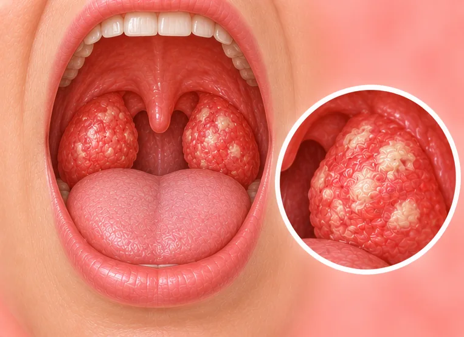

扁桃体炎
扁桃体肿胀疼痛，通常由病毒或细菌引起
这是什么
喉咙后部的扁桃体变红、肿胀、疼痛，吞咽时会痛，常伴有发烧。
- 喉咙里的扁桃体
- 儿童常见
- 喉咙痛、发烧
- 就诊科室
- 家庭医生；儿童看儿科医生
- 多发人群
- 最常见于儿童和青少年；成年人也会得
- 传染性
- 是，常会传染。可通过飞沫和接触传播
- 病程
- 常在大约一周内好转；若没有好转请看医生
常见表现

喉咙痛痒咽炎 
发烧发热 
颈部淋巴结肿大淋巴结肿大 
声音沙哑声音嘶哑 
没有胃口食欲减退
为什么会这样

细菌或病毒感染感染性病因 
密切接触或共用物品接触传播 
人多的地方与飞沫飞沫传播
其他原因
- 有时是细菌，需要医生检查
出现这些情况请先看医生
- 呼吸困难、呼吸有杂音或流口水：拨打999
- 连口水都咽不下，或张不开嘴
- 高烧，或发烧持续超过几天
- 婴儿或儿童非常嗜睡、不喝水或颈部僵硬
- 脱水迹象：口很干、尿很少、头晕
如果有以上情况，请先看医生，再来做调理。
本页只是一般性的健康资讯。请继续按时服用平常的药物，并继续看医生。
请继续日常治疗
请继续按医嘱服药，并按时复诊。我们的调理是温和的辅助，不能代替医疗。
日常护理

多喝水充足补水 
勤洗手手卫生 
咨询药剂师药剂师建议
更多自我照顾的方法
- 吃容易吞咽的软食，冷热适中
- 年纪够大的话，可用温盐水漱口
告诉理疗师
- 发烧或正在感染
- 怀孕
- 严重过敏
调理师会在开始前和你确认这一项。
相关疾病
参考资料: General information based on public health sources such as Mayo Clinic, NHS, Cleveland Clinic and NCBI StatPearls.
页面更新: 2026-10-31